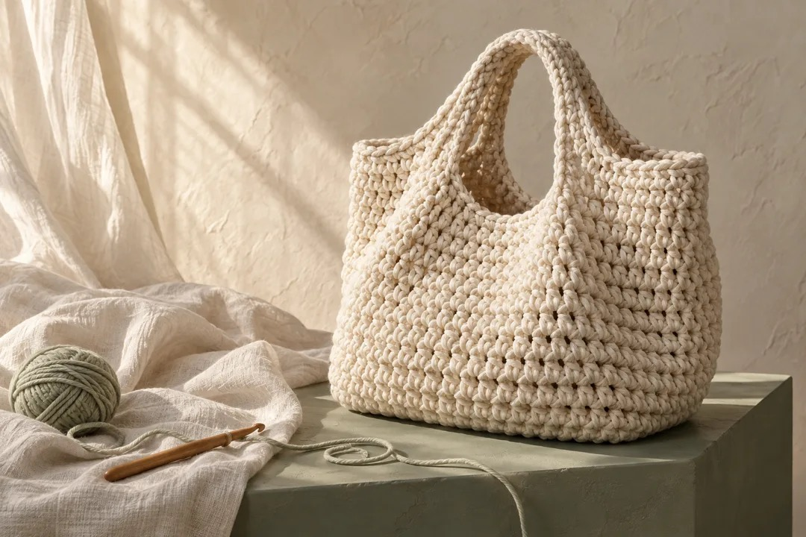
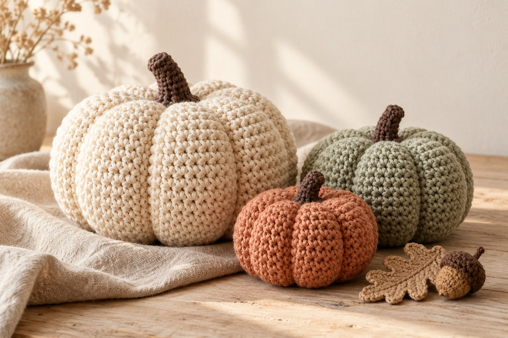
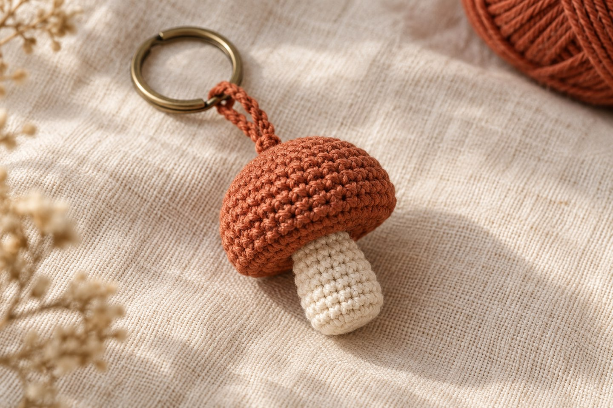
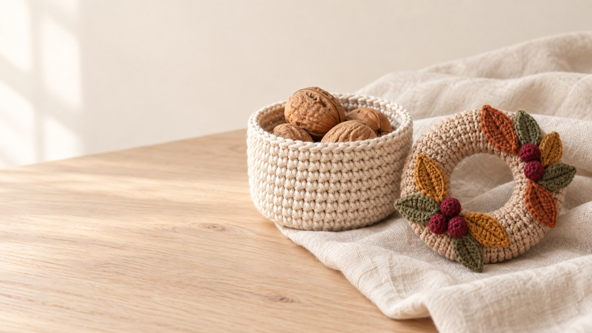
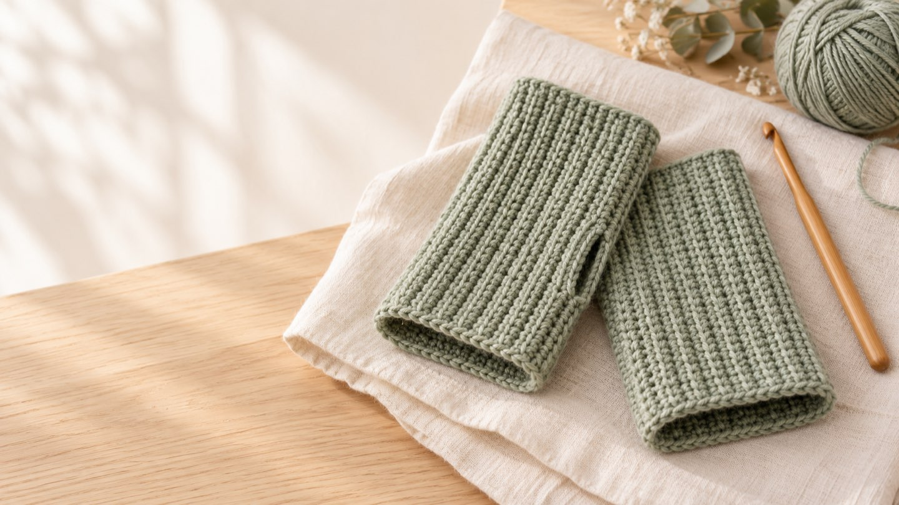

Häkeln · Lernen · Selbermachen
Aus Garn wird deins.
Kostenlose Anleitungen, ein interaktiver Lernpfad und Werkzeuge zum Selbstentwerfen – finde in Sekunden, was du suchst.

Was möchtest du heute tun?
Häkeln lernen
Von der ersten Luftmasche bis zur ersten Anleitung – in 7 kurzen Lektionen mit Mini-Quiz.
Anleitung finden
Kostenlos, Schritt für Schritt und mit klaren Maschenzahlen – filterbar nach Thema und Level.
Muster entwerfen
Maschen per Klick setzen und automatisch Anleitung, Diagramm und 3D-Vorschau erhalten.
Kostenlose Anleitungen
Beliebt zum Nachhäkeln

Kürbis häkeln
Aus einem Rechteck – ohne Runden und Zunahmen, in drei Größen.

Mini-Pilz als Taschenanhänger
Der Trend 2026: kleine Charms aus Garnresten.
Kleiner Häkel-Bär
Dein erstes Amigurumi – Runde für Runde mit Maschenzahlen.
Blüten & Blätter
Sechs kleine Modelle für Kränze und Applikationen.
Interaktiv & kostenlos
Häkeln lernen in 7 Lektionen
Kurze Erklärungen, eine Übung zum Mitmachen und ein Mini-Quiz pro Lektion. Jede bestandene Lektion schaltet die nächste frei – dein Fortschritt bleibt in deinem Browser gespeichert.
Lernpfad starten →- 1Das richtige Material
- 2Nadel und Faden halten
- 3Luftmaschen und Anschlag
- 4Die feste Masche
- 5Halbe Stäbchen und Stäbchen
- 6In Runden häkeln
- 7Anleitungen lesen
Blog
Neu im Blog

Herbstdeko häkeln: Körbchen & Erntekranz
Körbchen, Blätter, Beeren und Mini-Kranz – kostenlose Anleitungen mit Maschenzahlen.
7. Oktober 2026 · 7 Min. Lesezeit
Stulpen häkeln: Anleitung für Anfängerinnen
Pulswärmer in 3 Größen – kostenlose Anleitung mit Maschenzahlen und Daumenloch.
5. Oktober 2026 · 6 Min. LesezeitÜber PrettyCrochet
Eine Masche. So viele Ideen.
PrettyCrochet ist aus der Liebe zu Wolle und ruhigen Handgriffen entstanden. Hier findest du verständliche Anleitungen ohne Fachchinesisch, ehrliche Empfehlungen und Werkzeuge, die dir das Planen eigener Projekte leichter machen.
Mehr über PrettyCrochet →